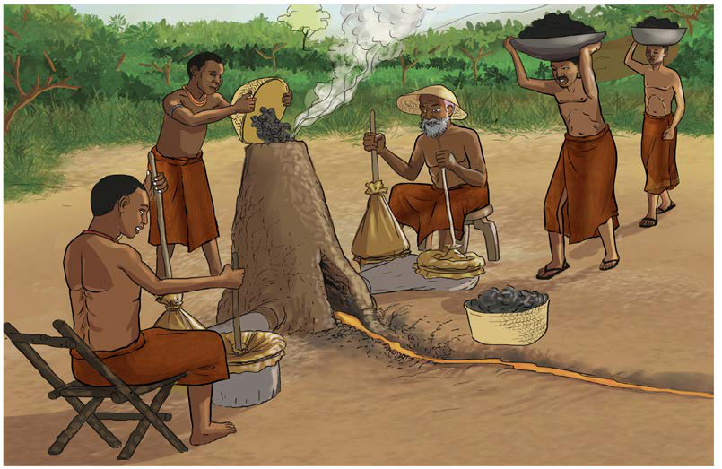

Sayansi na teknolojia asilia za Zama za Chuma
Sayansi na teknolojia asilia za Zama za Chuma zilihusika katika kutengeneza zana mbalimbali za chuma. Chuma kilipatikana kwa kuchimba udongo (mbale) wenye chembechembe za madini ya chuma, kisha kuwekwa kwenye tanuru la moto mkali wa mkaa ili kuuyeyusha. Sayansi na teknolojia hii ilisababisha madini ya chuma yaliyochanganyikana na udongo kujitenga na kupata majimaji ya chuma yaliyoganda katikati ya tanuru, mfano wa mafukuto ya chuma safi yaliyoitwa kitali. Kitali kilitumika katika kutengeneza zana za chuma. Kielelezo namba 6, kinawasilisha sayansi na teknolojia za ufuaji wa chuma.

Kazi ya utengenezaji zana za chuma ilifanywa na wahunzi. Zana za chuma zilitengenezwa kwa kutumia nyundo na mawe ili kupata umbo husika. Moto ulitumika kuyeyusha chuma wakati wa utengenezaji wa zana. Kielelezo namba 7, kinawasilisha shughuli za utengenezaji wa zana za chuma.